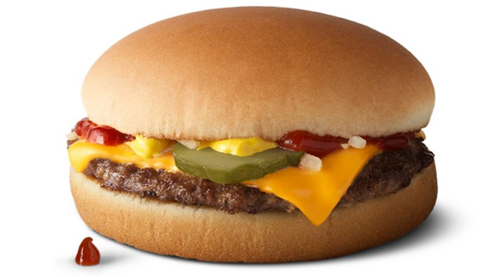

Cheeseburger

Description
Often considered a summertime staple, I find myself grilling cheeseburgers year-round.
When I do, my favorite topping isn't ketchup, mustard, or a crisp dill pickle. It's bacon.
With bacon both in the burger and on it, my bacon cheeseburgers
are more memorable than anything ordered out, and best part is the entire meal is prepared on the grill.
Ingredients
- Cheddar cheese
- Brioche buns
- Good bacon
- Grass fed beef patty
- Sliced onions or marinated onions
- Worcestershire sauce
Steps
- Preheat your grill to 350-450F for good even heating
- Grill the bacon and when done put on mesh with some papers under it
- Grill the patties for around 9 to 11 minutes each and add the cheese on top for the last minute
- Grill the patties for around a minute on the cut side to get a nice texture
- Place a burger on each bottom bun. Place two folded slices of bacon on top of each burger.
Top with bun and serve with your choice of condiments.